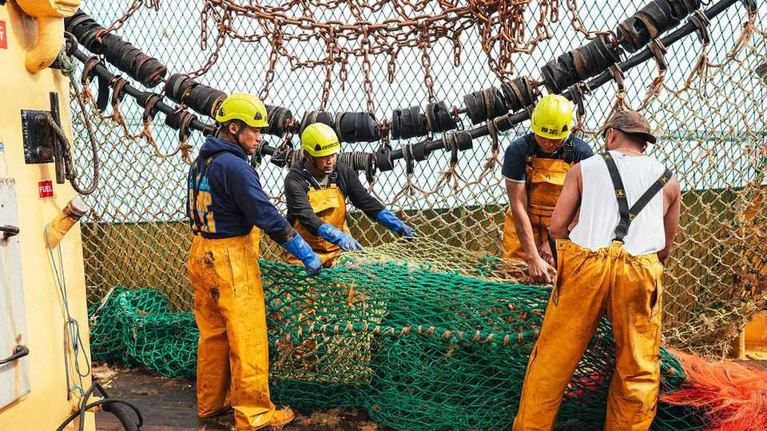
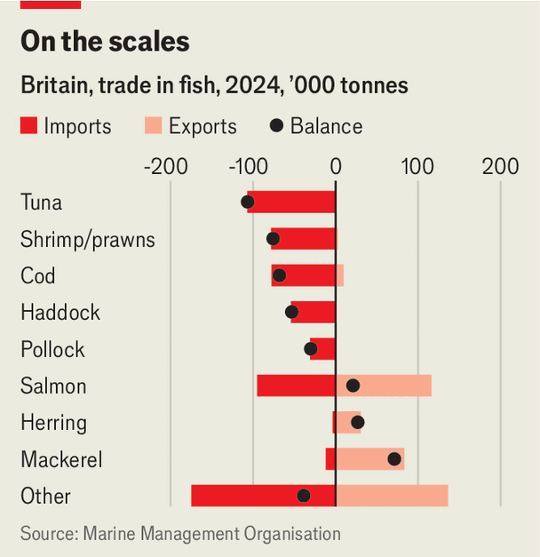

Brexit has disappointed British fishermen
But they have greater things to worry about

Sep 10th 2026
Boris Johnson came to Brixham in 2019 promising gifts. When not eating fish and chips, the then prime minister told Ian Perkes, a fish merchant in the Devon port, to hire more staff. “Once we have taken the fish off the French,” Mr Perkes recalls being told, “you will be so busy.” Seven years on, Mr Perkes is disillusioned. “Boris never took the fish off the French.” He “didn’t have a fricking clue”. Instead new trade barriers with the European Union have made the exporter’s life “much more difficult”.
The fishing industry is an economic minnow, representing 0.03% of output in 2025. But it symbolises Britain’s maritime past, and the Leave campaign used its plight to reel in votes far from the coast. Nigel Farage, a champion of Brexit, led a flotilla of fishing boats up the Thames before the referendum, promising to take back control of British waters.
But once Brexit negotiations began, the sector was forgotten. British fishermen got only a slightly higher share of the catch in British waters, while fish exports became tangled in red tape. Brixham’s seafarers are nonetheless keen to dispel the idea that they are Brexit-obsessed. For Mike Young, a fisherman for 44 years, fuel costs are a much bigger “bug bear”. And in the long run, climate change and recruitment difficulties loom largest in fishermen’s minds.
The heyday of British fishing was in the mid-20th century, when the long-distance fleet travelled from northern ports like Grimsby and Hull to rich fishing grounds around Iceland. They returned heavy with cod and haddock. But during the infamous cod wars of the 1950s to the 1970s Iceland sent out gunboats to assert sovereignty over its waters, leading to the demise of Britain’s long-distance trawlers.
Britain joined the European Economic Community in 1973, which eventually meant member states getting access to each other’s waters. A decade later, with stocks collapsing, the bloc set quotas for how much of a species could be caught, determining each country’s share according to its catch in the 1970s. Many British fishermen thought their allocation was unfairly low, as that period was when much of Britain’s fleet was still working far from European waters. Yet those shares persisted, and between 2012 and 2016 boats from other EU countries caught over half of the fish taken from British waters.
Brexit was meant to fix that. The British government initially pushed for the catch to be divided according to where the fish actually swim, a formula that could have increased Britain’s share by up to 55 percentage points for some species like pollock. But when it came to thrashing out a deal with the EU, the government’s priorities lay elsewhere. It settled for new shares representing only 68% of what its formula would have achieved.

Brexit also created headaches for exporters. Fussy Britons don’t much like eating the species caught by the country’s fishing boats, such as mackerel and herring, so a lot has to be sold abroad (see chart). Britain exported £2bn ($2.7bn) worth of seafood in 2025, over 60% of it to the EU. This has left the industry vulnerable to Brexit-related paperwork: getting vets to sign off shipments, or filling in more customs forms. Mr Perkes in Brixham now employs a French lawyer to make sure he is correctly following tax rules. Exports sharply fell in 2021 when the new trade regime came into effect, and were still 14% down in 2025 in volume terms on 2020.
But Brexit’s effects should not be exaggerated. Mr Young, the seasoned fisherman, says it “hasn’t changed my life at all”. The industry’s output is roughly what it was in 2019. Leaving the EU has mostly exacerbated long-standing trends, above all consolidation. Britain now has 5,000 fishing boats and 10,000 fishermen, in both cases around half as many as in 1994. Yet output is slightly up in real terms on the 1990s, because a few big boats catch ever more fish. Scottish mega-trawlers are doing especially well, chasing midwater species like mackerel or herring. As Brexit’s quota-gains mostly benefited those stocks, the big Scottish boats have become even more dominant.
Right now, fishermen complain less about quotas and much more about high fuel prices caused by the conflict in Iran. Sean Irvine, another fishing veteran, says that business is “awful” because of diesel costs. Brixham fishermen paid £1.01 per litre for fuel at the beginning of September, roughly double what they paid in January.
Even when it comes to longer-term problems, fishermen are more exercised by issues other than Brexit. The effect of climate change is one such worry. Another is “spatial squeeze”, the idea that increasingly large swathes of the sea are being taken up by offshore wind farms and marine-protection areas, leaving less room for fishing.

Attracting new blood may be the deepest concern of all. Fishermen used to hand their craft down to their sons. Yet this is increasingly rare. Mr Young says that almost “everyone else in my family” has had more sense than to go into fishing. The workforce (nearly all men) is ageing quickly. The average age, according to a sample surveyed in 2024 by Seafish, a public body, was 44. That might sound young, but it is four years older than in 2021, and high for work this punishing. The problem is not money, says Juliette Hatchman, who runs a producer organisation, but the “unattractive lifestyle”. You can be at sea for days at a time, doing physical labour and living in cramped accommodation.
Skippers are recruiting migrants to fill the gaps. Mr Young says: “Our intention would be to employ Brits but there are none.” Instead his crew consists mostly of Filipinos, whom he describes as “absolutely brilliant” and crucially “not boozers, unlike the British”. Yet getting a skilled-worker visa is becoming harder. Ms Hatchman points out that it is a high bar for deckhands to be able to speak the proficient English now required by the government. For Mr Young, this is an existential problem. If the foreign workers were not there, he says, “we wouldn’t be going to sea.”
The fishing industry’s woes speak to a wider truth about Britain’s labour market. Despite high levels of youth unemployment, Britons are unwilling to work in unglamorous industries like social care or fruit-picking—or fishing. Clayton, a teenager from a fishing dynasty, is a rarity: he wants to stay in the trade. But his Brixham classmates all want to become footballers. That, he thinks, is a shame. When fishing, the mornings are early and the work is hard. But nothing, he says, beats the freedom of the sea, “where you can go wherever you want”. ■